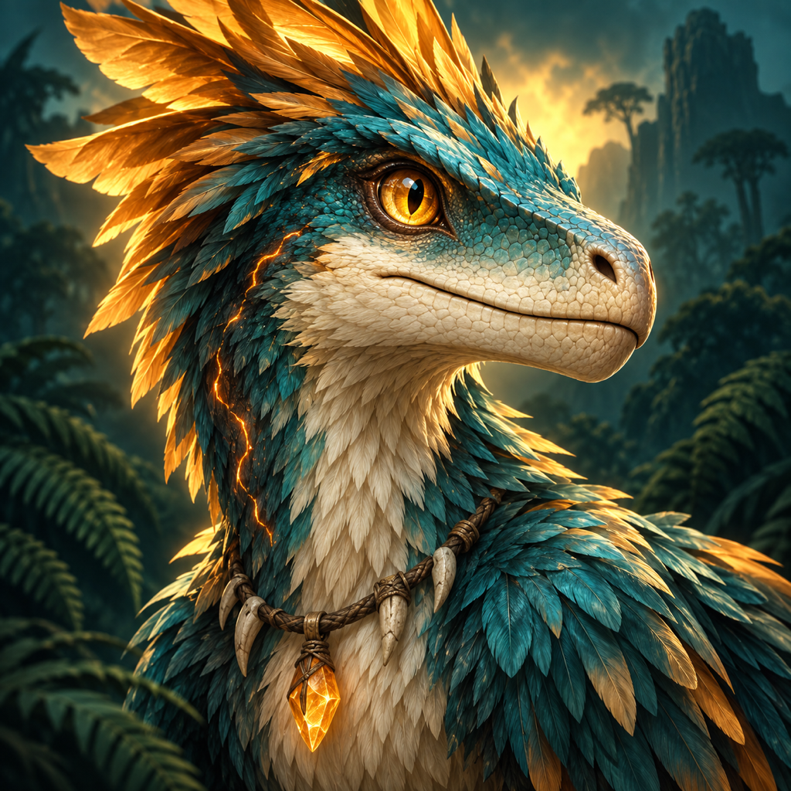
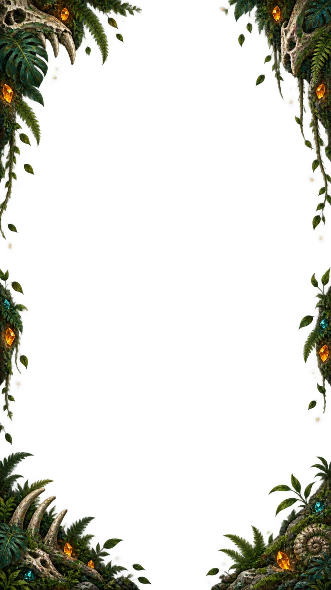

原始文明聖獸覺醒獸潮季 · 11遠征篇章巨蕨巢道02
BUILD · HUNT · SURVIVE
原始文明聖獸覺醒
築起荒野防線，帶領聖獸迎擊遠古獸潮。

原始文明聖獸覺醒獸潮季 · 11BUILD · HUNT · SURVIVE
築起荒野防線，帶領聖獸迎擊遠古獸潮。
YOUR LIVING HOMESTEAD
沿小徑逛逛，走近行商購買卡牌，或在空地建設營地。
CHOOSE YOUR PATH
選擇第一個關卡，開始這次遠征。
↑ 向上滑動探索後續篇章

EXPEDITION